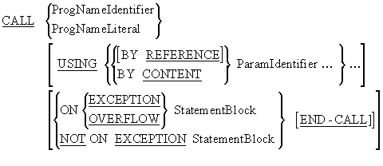
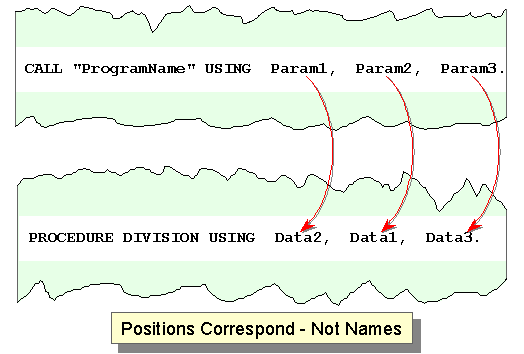
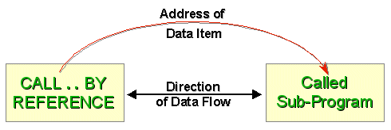
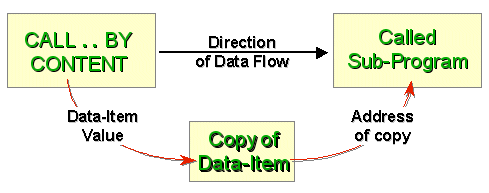
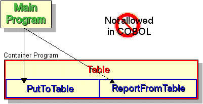
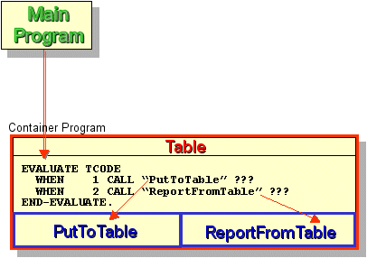

|
|
||||||||||

| Introduction Unit aims, objectives, prerequisites. |
||
|
The CALL verb |
||
|
Contained Subprograms |
Introduction
Aims
To provide a brief introduction to building modular systems using separately compiled and/or contained subprograms.
To explore the syntax, semantics, and use of the CALL verb.
To examine how "state memory" is implemented in COBOL and to demonstrate the effects of the IS INITIAL clause and the CANCEL command.
To examine how contained subprograms are implemented and to show how the IS GLOBAL clause may be used to implement a form of "Information Hiding".
To show how the IS EXTERNAL clause may be used to set up an area of storage that may be accessed by any program in the run-unit.
To introduce Structured Design and to summarize its criteria for achieving good quality subprograms.
Objectives
By the end of this unit you should -
- Understand the difference between a subprogram and a contained
subprogram
- Be able to use the CALL verb to transfer
control to a subprogram and to pass parameter values to it.
- Understand the difference between the BY REFERENCE
and BY CONTENT parameter passing mechanisms.
- Understand what "state memory" is and be able to create
subprograms that do, or do not, exhibit "state memory".
- Understand the IS COMMON, IS
GLOBAL and IS EXTERNAL clauses.
- Be able to create subprograms of good quality.
Prerequisites
Introduction to COBOL
Declaring data in COBOL
Basic Procedure Division commands
Selection in COBOL
Iteration in COBOL
Introduction to Sequential files
Processing Sequential files
Reading Sequential Files
Edited Pictures
The USAGE clause
COBOL print files and variable-length records
Sorting and Merging
Introduction to direct access files
Relative Files
Indexed Files
Using tables
Creating tables - syntax and semantics
Searching tables

The CALL verb
Introduction
Your vendor will have supplied a Linker
with your COBOL development system. You will have to read the
vendor manual for the specifics of how it works.
A large software system is not usually written as a single monolithic program. Instead, it consists of a main program and many independently compiled subprograms, linked together to form one executable run-unit.
A subprogram is the name we give to a program that is invoked from another program.
The object code of separately compiled subprograms has to be linked together into one executable run-unit by a special program called a "Linker".
One purpose of the Linker is to resolve the subprogram names (given
in the PROGRAM-ID clause) into actual physical
addresses so that the computer can find a particular subprogram
when it is invoked.
In a system consisting of a main program and linked subprograms, there must be a mechanism that allows one program to invoke another and to pass data to it. In many programming languages, the procedure or function call serves this purpose.
In COBOL, the CALL verb is used to invoke one program from another.
CALL verb semantics
The CALL verb transfers control to a subprogram. When the subprogram has finished, control returns to the statement that follows the CALL in the calling program.
The called program may be an independently compiled program, or it may be contained within the text of the calling program (i.e. it may be a contained subprogram).
CALL syntax and notes

Passing parameters of incorrect
types to a called program is a frequent source of program failure
(crashes).
Always double check to make sure that the
types of the parameters passed by the caller program are in agreement
with those declared in the LINKAGE SECTION of the called program.

CALL notes
- If the CALL passes parameters, then the
called program must have a USING phrase
after the PROCEDURE DIVISION header and
a LINKAGE SECTION to describe the parameters
passed.
- The CALL statement has a USING
phrase only if a USING phrase is used in
the PROCEDURE DIVISION header of the called
program.
- Both USING phrases must have the same
number of parameters.
- Unlike languages like Modula-2, COBOL does not check the type
of the parameters passed to a called program. It is the programmer's
responsibility to make sure that only parameters of the correct
type and size are passed.
- Parameters passed from the calling program to the called program
correspond by position, not by name. That is, the first parameter
in the USING phrase of the CALL
corresponds to the first in the USING phase
of the called program, and so on.

- If the program being called has not been linked (does not exist
in the executable image,) the statement block following the ON
EXCEPTION/OVERFLOW will execute. Otherwise, the program
will terminate abnormally.
- BY REFERENCE is the default passing mechanism,
and so is sometimes omitted.
- Note that vendors often extend the CALL by
introducing BY VALUE parameter passing,
and by including a GIVING phrase. These
are non-standard extensions.
In standard COBOL, the CALL verb has two
parameter passing mechanisms -
BY REFERENCE and BY CONTENT.
- BY REFERENCE is used when the
called program needs to pass data back to the caller.
- BY CONTENT is used when data needs to be passed to, but not received from, the called program.
The diagrams and explanations below show how these mechanisms work.
CALL..BY REFERENCE
When data is passed BY REFERENCE, the address
of the data-item is supplied to the called subprogram. So any changes
made to the data-item in the subprogram are also made to the data-item
in the main program because both items refer to the same memory
location.

CALL..BY CONTENT
When a parameter is passed BY CONTENT
a copy of the data-item is made and the address of the copy is supplied
to subprogram. Any changes made to the data-item in the subprogram
affect only the copy.

CALL example
The example fragments below show how a CALL statement is made in a calling program to invoke and pass parameters to a subprogram (shown in outline).
|
|
Outline of the called program
Notes
Note that the name given in the CALL statement
(i.e. "DateValidate") corresponds with the name given
in the PROGRAM-ID of the called program.
The main purpose of the PROGRAM-ID clause
is to identify programs within a run-unit (i.e. a set of programs
that have been compiled and linked into one executable image)
and the CALL transfers control from one
program in the run-unit to another.
Note that the subprogram has a LINKAGE SECTION where the parameters passed to it are defined.
Note that the names of the parameters passed by the CALL statement in the main program are different from those in the called subprogram. This is because it is the positions of the parameters following their respective USING clauses that is significant, not the names used.
In this case TempDate corresponds to DateParam and DateCheckResult to DateResult.
TempDate is a parameter passed to the subprogram BY CONTENT. This means that no matter what the subprogram does to the value in the corresponding DateParam, the original value of TempDate will be unaffected.
By contrast, DateCheckResult is passed BY REFERENCE and this means that any changes to the value in the corresponding DateResult are reflected by a change in value of DateCheckResult in the main program.
Passing parameters BY REFERENCE is the mechanism by which data is passed from a called subprogram to the main program. In this example, what is being passed back is a code indicating the success or failure of the validation.
BY REFERENCE should be used only when you require a subprogram to pass data back to the main program. It is a principle of modular design (i.e. a design where the system is broken into a number of subprograms. rather than consisting of a single monolithic program) that the data connection between modules should be as limited as possible.
The IS INITIAL phrase
The first time a subprogram is called, it is in its initial state:
all files are closed and the data-items are initialized to their
VALUE clauses.
The next time it is called, it remembers its state from the previous call. Any files that were opened are still open, and any data-items that were assigned values still contain those values.
Although it can be useful for a subprogram to remember its state from call to call, systems that contain subprograms. with "state memory" are often less reliable and more difficult to debug than those that do not.
A subprogram can be forced into its initial state each time it is called, by including the IS INITIAL clause in the PROGRAM-ID.
In the examples below, the subprogram "Steadfast" produces the same result every time it is called with the same parameter value. But "Fickle", because it remembers its state from the previous call, will produce different results when called with the same value.
|
|
Example Runs
The parameter value is shown in blue and the result displayed is shown in red. First Run
12
Total = 62 Second Run
5
Total = 55 Third Run
12
Total = 62 |
In "Steadfast", no matter how many times we run the program, when the parameter value is the same - the result is the same. For instance, on the first and third runs of the program the parameter has the value 12 and each time the result is 62 (12+50).
|
Example Runs
The parameter value is shown in blue and the result displayed is shown in red. First Run
12
Total = 62 Second Run
5
Total = 67 Third Run 12
Total = 79 |
In "Fickle" the result produced by running the program depends on what the program "remembers" from the last time it was run. In the example runs, even though the parameter value is the same on the first and third runs, the result produced is different. On the first run the result is 62 (12+50) but on the third run, even though the value of the parameter is still 12, the program "remembers" the value of RunningTotal from the previous run and produces a result of 79 (12+67).
State memory and the CANCEL verb
Sometimes a program only needs "state memory" part of the time. That is, it needs to be reset to its initial state periodically.
In COBOL this can be done by means of the CANCEL verb/command.
The syntax of the CANCEL verb is as follows
When the CANCEL command is executed, the memory space occupied by the subprogram is freed and if the subprogram is called again it will be in its initial state (i.e. all files closed and the data-items initialized to their VALUE clauses).
By using the following statements in our main program
CALL "Fickle" USING BY CONTENT IncValue. CANCEL "Fickle" CALL "Fickle" USING BY CONTENT IncValue.
we can force "Fickle" to act like "Steadfast".
Subprogram clauses and verbs
COBOL subprograms. are identical to standard COBOL programs with the following exceptions:
- The PROGRAM-ID may take the IS
INITIAL and IS COMMON PROGRAM clauses.
- When parameters are passed to the subprogram, the PROCEDURE
DIVISION header of the subprogram must have the USING
phrase.
- When there are parameters, the DATA DIVISION
of the subprogram must have a LINKAGE SECTION
where the items specified in the USING
phrase are declared.
- The EXIT PROGRAM statement is used where
the STOP RUN would be used in a standard
COBOL program.
An EXIT PROGRAM statement has the effect of stopping the subprogram and returning control to the calling program.
The difference between a STOP RUN and an EXIT PROGRAM statement is that the STOP RUN causes the whole run-unit to stop (even if it is encountered in a subprogram) instead of just the subprogram
- Contained subprograms. must end with the END
PROGRAM statement. The END PROGRAM statement delimits the
scope of a contained subprogram

Contained Subprograms
Introduction
COBOL subprograms can be independently compiled separate programs (linked into a single executable run-unit) or they can be contained within the text of a containing program.
Contained subprograms. are very similar to the procedures (or user defined functions) found in other languages except that they are invoked with the CALL verb and are better protected against accidental data corruption.
- In the procedures used in other languages all external data-items
are visible within the procedure unless they are explicitly redeclared
as local data-items.
- In COBOL's contained subprograms, no external data-items are
visible within the contained subprogram, unless this has been
explicitly permitted by using the IS GLOBAL
clause in the data declaration.
When contained subprograms are used, the end of the main program, and each subprogram, is signalled by means of the END PROGRAM statement. This has the format:
END PROGRAM ProgramIdName.
Contained subprogram restrictionsContained subprograms have the following restrictions:
- Although contained subprograms can be nested, a contained subprogram
can only be called by the immediate containing program or by a
subprogram at the same level.
- Contained subprograms. can only call a subprogram at the same
level if the called program uses the IS COMMON
PROGRAM clause in its PROGRAM-ID.
The IS GLOBAL clause
As noted above, data-items declared outside the scope of a contained subprogram cannot be seen within the subprogram.
Sometimes however, you may want to share some data-item within a number of contained subprograms.
For instance, in the example program fragments below, we want both of our subprograms to be able to access the NameTable.
When we want a data-item to be seen within contained subprograms we simply follow the item declaration with the IS GLOBAL clause.
The IS GLOBAL clause specifies that the data item is to be visible within any subordinate contained subprograms.
|
Information Hiding using the IS GLOBAL clause and contained subprograms
Contained subprograms. seem to offer us the opportunity to create some form of Information Hiding. For instance, it looks as though we could create an Informational Strength module as defined by Myres (Myres, G.J. Composite/Structured Design. 1979) by hiding a table declaration within a containing program and then allowing access to it through the contained subprograms. (see diagram below).

Unfortunately, this arrangement is not allowed in COBOL because, although subprograms. may be nested, a contained subprogram can only be called by the immediate containing program or by a subprogram at the same level. So in the diagram above, the main program would not be allowed direct access to the contained subprograms.
The only way any kind of Informational Strength module can be achieved is for the MainProgram to call the ContainerProgram and for the ContainerProgram to call the appropriate subprogram as shown below.
To do this the MainProgram would have to pass some sort of code to the ContainerProgram to tell it which of the subprograms to use and the parameter list passed to the ContainerProgram would have to be wide enough to accommodate the needs of the contained subprograms. This does not cause much of a problem in the example below, but in a case where the contained programs had more significant data needs it could prove a serious drawback.
Glenford Myres (Myres, G.J. Composite/Structured Design. 1979) has produced criteria for deciding whether a module (i.e. a subprogram) is good or bad. Module Coupling (i.e. the data connections between modules) is one of the criteria he considers. According to his criteria the ContainerProgram below exhibits both Stamp and Control coupling.

A programmer pondering the problem outlined above - how to get an external program to make direct calls to the subprograms contained within a container might be excited to come across the IS COMMON PROGRAM clause. He might be forgiven for thinking for a moment that this clause was the solution to his problem. Sadly this is not the case.
The only use of the IS COMMON PROGRAM clause is to allow a subprogram to call one of its sibling subprograms. (i.e. a subprogram at the same level).
Contained subprograms can only call a subprogram at the same level if the called program uses the IS COMMON PROGRAM phrase in its PROGRAM-ID. For instance in the example below DisplayData is called by the main program and by its sibling InsertData but InsertData cannot call DisplayData.
The syntax diagram for the IS INITIAL and IS COMMON clauses is shown below. As you can see from the diagram both the COMMON and INITIAL clauses may be used in combination. The words IS and PROGRAM are noise words which may be omitted.
Example program using contained subprograms. and the IS COMMON PROGRAM and IS GLOBAL clauses
In this example, SharedItem can be accessed in the main program and in each of the subprograms because this has been explicitly specified in the data declaration by using the IS GLOBAL clause.
Note that "$ SET NESTCALL" is a compiler directive for Microfocus NetExpress telling the compiler to expect contained subprograms. It is not standard COBOL.
|
Example program using the IS INITIAL and IS COMMON clauses and the CANCEL command.
In the example below the "Fickle" and "Steadfast" subprograms are revisited. This time they have been incorporated into the text of a main, containing program.
The first part of the main program calls "Fickle" and "Steadfast" to demonstrate the difference between a program that has state memory and one that does not.
In the second part of the main program, "Fickle" is used with the CANCEL command to calculate the square of a number by repeated addition. After the square of a particular number has been calculated the CANCEL command is used to initialize "Fickle" so that the next number may be computed.
|
Example RunNumeric values entered by the user are shown in blue and values output by the computer are shown in red.
|
The IS EXTERNAL clause
The IS GLOBAL clause allows a program and its contained subprograms to share access to a data-item.
The IS EXTERNAL clause does the same for any subprogram in a run-unit (i.e. any linked subprogram). But while the data-item that uses IS GLOBAL phrase only has to be declared in one place, each of the subprograms that wish to gain access to an EXTERNAL shared item must declare the item in exactly the same way.
The animation below shows how the IS EXTERNAL clause works.
In this animation there are four programs in the run-unit. Program B and Program D wish to communicate using a shared data. In COBOL they can do this by using the IS EXTERNAL clause to set up a shared area of memory but both both programs must contain the declarations below. These set up, and allow access to, the shared area.
Example:
WORKING-STORAGE SECTION.
01 SharedRec IS EXTERNAL.
02 PartA PIC X(4).
02 PartB PIC 9(5).
SharedRecord
Program

The kind of hidden data communication between subprograms that is supported by the IS EXTERNAL clause is generally regarded as very poor practice. Myres (Myres, G.J. Composite/Structured Design. 1979), for instance, indicates that this "Common Coupling" is nearly the worst kind of module coupling possible.
Designing a modular system
Anyone who considers creating a system that consists of subprograms and contained subprograms should not embark on such an undertaking without an sound understanding how such a system is designed and what makes a good subprogram and what does not.
This kind of system design is called a modular design and the subprograms are called modules. There are a number of different methods/approaches to designing a modular system but Structured Design is probably the most successful.
It is beyond the scope of this course to provide instruction in Structured Design but programmers tasked with creating a modular system should read these two texts.
Page-Jones, Meilir, Practical guide to Structured Systems Design
- Second Edition,
Prentice-Hall 1988.
Myers, Glenford, Composite/Structured Design, Von Nostrand Reinhold 19
Criteria for module goodness
Although this course cannot provide instruction in Structured Design we can observe that the criteria for module goodness specified in that approach boils down to three things:
- A subprogram should perform a single specific function or should
co-ordinate its subordinate subprograms such that they perform
a single function.
- A subprogram should only be given access to the data it actually
requires to do its job. Even then, the type of access (Read-Only
or Read-Write) allowed on the data should be restricted.
- The data passed to and from the subprogram should be passed
through the parameter list in as transparent a manner as possible
- there should be no hidden method of data transfer.

Copyright Notice
These COBOL course materials are the copyright property of Michael Coughlan.
All rights reserved. No part of these course materials may be reproduced in any form or by any means - graphic, electronic, mechanical, photocopying, printing, recording, taping or stored in an information storage and retrieval system - without the written permission of the author.
(c) Michael Coughlan